Sim-robot-learning · 归档于 2026-11-05
SimOpt
Closing the Sim-to-Real Loop: Adapting Simulation Randomization with Real World Experience
归档到 Robot learning in simulation：sim-to-real 的转折点，从盲目随机化走向用少量真机 rollout 调整模拟器参数分布；也服务 Agent-centric real-to-sim，是"用真实 rollout 调模拟器"的历史源头。
TL;DR
- Problem
- Domain randomization 的参数范围靠人手调：窄了够不到真机，宽了 policy 变保守甚至学不会，而且调完也不知道对不对。
- Idea
- 把模拟器参数的分布当成要学的东西：sim 里训 policy → 真机跑 3 条 → 抽 9600 组参数在 sim 里跑同一个 policy → 按观测差距、带 KL 约束更新分布 → 再训。
- Result
- Franka 开抽屉：1 次 SimOpt 后 20 次试验全部打开；Yumi swing-peg-in-hole：2 次 SimOpt 后 20 次试验 90% 成功（§IV-D）。
Problem
随机化的范围只能靠猜：猜窄了够不到真实世界，猜宽了 policy 学不会开抽屉
Running example · 后面每个 stage 都跟着它走
Franka Panda 开柜子抽屉（Fig. 1 左、Fig. 8 右）：7-DoF 手臂站在柜子前；policy 输入 10D：7 个关节角 + 把手 3D 位置，输出 7 个关节速度 + 1 个夹爪指令；模拟器是 NVIDIA Flex，真实的 compliance、damping、friction 都不知道 → 想要：policy 只在 sim 里训练，上真机能抓住把手拉开抽屉，全程夹爪和把手保持垂直。论文先在 sim 里做同一任务的迁移（柜子偏 15 cm / 22 cm），再上真机。
flowchart LR IN["例子输入
Franka + 柜子
物理参数未知"]:::example IN --> A1["窄分布 DR
人设 σ ≈ 2 cm"] A1 --> AX["覆盖不到偏移的柜子
目标偏 15 / 22 cm"]:::gap IN --> B1["宽分布 DR
人设 σ = 10 cm"] B1 --> BX["够到把手，拉不开
Fig. 5 未过开抽屉线"]:::gap IN --> C1["手调 sim 直接上真机
SimOpt iteration 0"] C1 --> CX["夹爪歪，一指顶把手
手指被撑开，Fig. 8"]:::gap IN --> D1["轨迹回放式 system ID
把 sim 设成真实状态"] D1 --> DX["内部状态观测不到
App. A，无数字"]:::gap
依据：第 2 条是实测（§IV-C、Fig. 5）。第 1 条是 §IV-C 的论证（要覆盖 15–22 cm，σ 至少 10 cm），论文没有单独跑窄分布迁到目标的曲线。第 3 条是 §IV-D2 的描述，没报成功率。第 4 条是 App. A 的论证，举的是绳子的弯曲状态，没有对比数字。
根本问题：随机化分布是人猜的，真机的反馈回不到模拟器。 这篇的切入点：不复制现实，只用真机 rollout 的部分观测迭代更新分布，让 policy 在 sim 和真机里的行为变像。
Related work
| 相关工作 | 解决什么 | 怎么解决 | 和本文的区别 |
|---|---|---|---|
| 同一问题 · 别的解法 | |||
| Domain randomization Tobin、CAD2RL、James、OpenAI 灵巧手、Peng；先辨识再随机化：Tan 2018、Lowrey、Antonova | sim 训的 policy 直接上真机 | 在人设定的参数分布上训练（Eq. 1） | 分布靠专家手调，不看真机结果 → 本文用真机 rollout 自动更新分布 |
| 轨迹式 system ID Tan 2016 [30]、Zhu 2018 [31] | 把模拟器参数校准到真机 | 把 sim 设到真实状态、执行真实动作，再比差异 | 要能读写全状态，[31] 还要估真实 reward → 本文只用部分观测 + 闭环 rollout，真机不算 reward |
| Adaptive EPOpt Rajeswaran et al. [34]，作者说的最近邻 | 模型集合上的鲁棒 policy，用目标域数据调模型分布 | risk-sensitive 目标 + 粒子滤波 Bayesian 更新 | 只在 sim 里验证 → 本文 risk-neutral 平均目标、KL 约束迭代更新，并上两台真机 |
| Grounded simulation Farchy 2013 [32]、Hanna & Stone 2017 [33] | 用真实数据把模拟器"接地" | [32] 由人挑参数；[33] 额外拟合真机 forward 和 sim inverse dynamics | 要人参与或多拟合两个模型 → 本文只靠采样参数和算差距，全自动 |
| 相似做法 · 别的问题 | |||
| Model-based RL PILCO [13]、[14] | 用少量真机数据学 policy | 从真机 rollout 拟合概率 dynamics 模型 | 模型从数据学起 → 本文把物理引擎当带参数的模型，先验现成 |
来源：论文 §II Related Work、§III-A、App. A，未另行检索。§II 还提到 UP-OSI [23] 等工作，但没说和本文的差别，这里略去。
Level 1 · Big picture
不复制现实：让同一个 policy 在 sim 和真机里的行为变像，闭环更新随机化分布
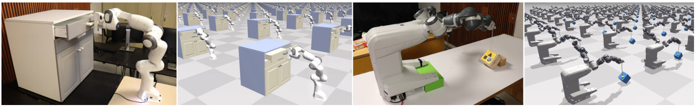
怎么读这张图
- 左两格：我们的例子。真机 Franka 和柜子，以及 Flex 里并行的许多副本。
- 右两格：第二个任务 swing-peg-in-hole。peg 挂在软绳上，甩进 45 度的洞，放到 E3 讲。
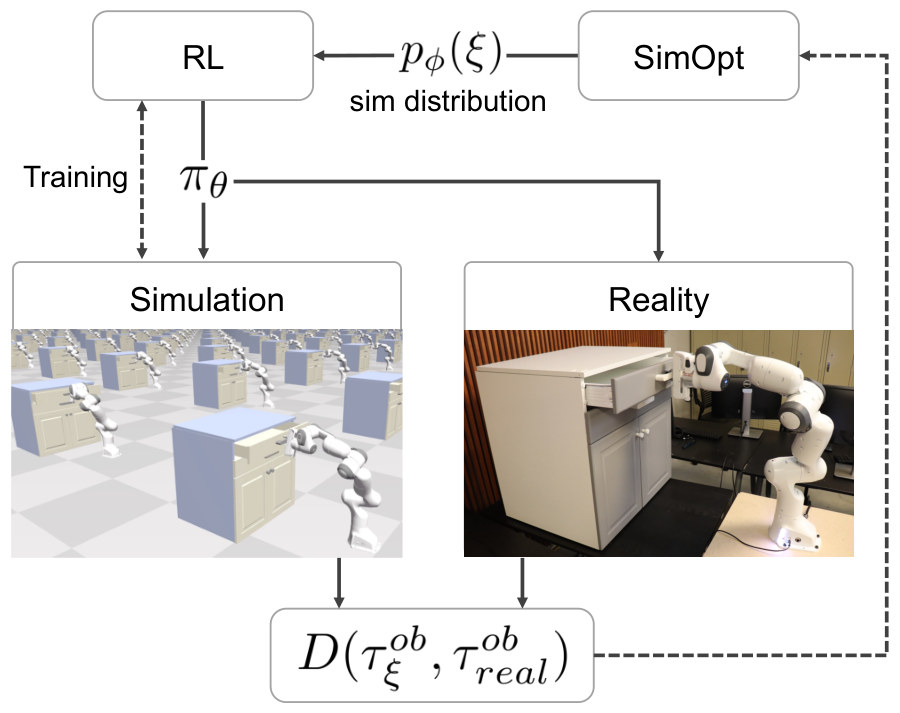
图里的符号
| 符号 | 白话 | 开抽屉例子里 |
|---|---|---|
| ξ | 一组模拟器物理参数，抽一次得一组 | 26 个数：关节 compliance / damping、夹爪、动作缩放、抽屉 joint、把手摩擦（Table I，26 是我数的） |
| pφ(ξ)，sim distribution | 这组参数的概率分布，也就是 SimOpt 要学的东西 | 一个多维高斯 |
| φ = (μ, Σ) | 这个高斯的中心和宽度（含参数之间的相关） | 把手摩擦的中心从 0.001 变到 2.13（Table I） |
| πθ | RL 训出的 policy，下标是网络权重 | 10D 观测 → 7 个关节速度 + 夹爪 |
| τobreal | 真机跑 policy 记下的观测轨迹，只含看得到的量 | 3 条 rollout 的关节角 + DART 跟踪的把手位置 |
| τobξ | 用这组参数的模拟器跑同一个 policy 得到的观测轨迹 | 每组参数一条，同样的 10 维观测 |
| D(·, ·) | 两条观测轨迹差多远，一个数 | 加权 L1 + L2（Eq. 4） |
怎么读这张图
- 左上 "RL" ← "sim distribution"：RL 拿到当前的参数分布，在上面训 policy。
- 中间 policy（πθ）分两路：同一个 policy 往下进 "Simulation"，往右进 "Reality"。虚线 "Training" 只连 Simulation：真机只执行，不训练。
- 底部差距框（D）：两边的观测轨迹汇到一起，比较有多不像。
- 右侧虚线回到 "SimOpt"：差距变成每组参数的代价，SimOpt 更新分布，回到左上。这条线就是标题里的 closing the loop。
flowchart LR I["Input
保守的初始分布
Table I 的 μ_init"]:::example --> L["闭环
训练 → 真机 → 更新
1 轮 · 3 条 rollout"] L --> O["Output
新分布 + 新 policy
真机 20 次全开"]
Level 2 · Stages
4 个 stage，两层循环
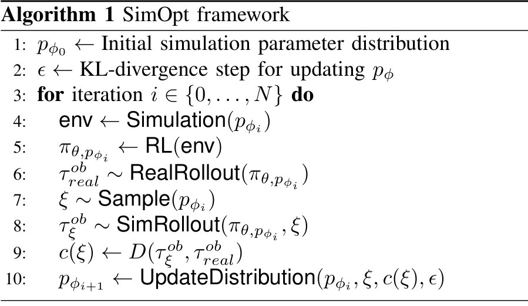
怎么读这张图
- 第 1–2 行：人给初始分布和移动步长；差距函数的权重也是人设的（Table IV）。
- 第 4–5 行：按当前分布建环境，RL 训 policy → Stage 1。
- 第 6 行：policy 上真机 → Stage 2。
- 第 7–9 行：抽参数、sim 里跑同一个 policy、算差距 → Stage 3。
- 第 10 行：更新分布 → Stage 4。算法只写一遍，实际在同一批真机 rollout 上把第 7–10 行重复多次（§IV-D）。
flowchart TD IN["初始分布
Table I 的 μ_init"]:::example --> S1 S1["1 · RL in sim
PPO 200 iter ≈ 22 min"] --> S2["2 · Real rollouts
3 条 · DART 跟把手"] S2 --> S3["3 · Sim rollouts + D
9600 组 ξ，各算差距"] S3 --> S4["4 · Update distribution
REPS · KL ≤ 1.0"]:::win S4 -->|内循环 ×20| S3 S4 -->|外循环：下一轮| S1 click S1 href "#stage-1" click S2 href "#stage-2" click S3 href "#stage-3" click S4 href "#stage-4"
点击 stage 展开 Level 3 细节；两层循环的预算和 warm start 见 闭环本身。
Level 3 · Details
每个 stage 的细节
Stage 1 RL on the current distribution 当前参数分布 → 在这个分布上训好的 policy
- Why：先要有一个在当前分布上能用的 policy，才有"行为"可以和真机比。
- 分布变世界：引擎本身是确定的；每抽一组参数就是一个不同的世界，合起来成了随机动力学（§III-A）。
- 目标：在所有这些世界上最大化平均 reward（Eq. 1），这一步和普通 domain randomization 相同。
- 初始分布要保守：从容易学的窄分布起步，不追求一开始就覆盖真机（§IV）。
- 算力：GPU 模拟器 NVIDIA Flex + 并行 PPO，64 块 GPU，每块 150 个 agent（§IV-D）。Table IV 的 PPO 写 400 个 agent，Table III 写 100，和这个数的关系论文没解释。
- Reward 只在 sim 里算：把手和末端的距离、角度对齐、抽屉开度、两指都在把手上（§IV-A）；sim 有全状态，真机不用测。
- 网络：§IV-C 的 sim 实验用 2 层、每层 64 单元的全连接网络；真机实验的网络没单独写。
flowchart LR a["抽参数
副本各不相同"] --> b["并行 PPO
Flex · 64 GPU"] b --> c["policy
10D → 7 + 1 维动作"]
Running example 在这一步
起点是 Table I 的初始均值：把手摩擦 0.001、抽屉 joint damping 2.0。训 200 RL iterations，约 22 分钟（§IV-D2）。
Stage 2 Real rollouts, partial observations policy → 几条真机观测轨迹（不训练，不算 reward）
- Why：这是整个循环里唯一碰真机的步骤，最贵，所以次数压到最少。
- 只执行：真机不做 RL，也不需要 reward instrumentation（§I）。
- 观测：关节角 + DART（在 depth 图上跟踪物体的 3D 铰接模型）给的把手 3D 位置（§IV-D）。
- 初始化：DART 还用来设定 sim 里柜子的位置（§IV-D），所以需要物体的 3D 模型。
- 部分观测就够：不用估全状态，比如绳子的直径和 compliance（§IV-A）。
- 解耦：算差距用的观测可以和 policy 的输入不同（§III-B）。
flowchart LR a["policy 上真机
Franka，只执行"] --> b["DART 跟踪
depth → 把手 3D"] b --> c["观测轨迹
3 条"]
Running example 在这一步
iteration 0 的 policy 够到把手、开始拉，但夹爪没有保持垂直，一根手指从下方顶把手太用力；手指夹持力有限，于是被撑开（§IV-D2）。记下 3 条 rollout，这个"歪"就写在关节角和把手轨迹里（我的理解）。
Stage 3 Sample parameters, measure the discrepancy 当前分布 + policy + 真机轨迹 → 每组参数一个差距
- Why：要知道哪组参数能让 sim 里的 policy 表现得和真机一样；模拟器不可微，只能采样试。
- 采样：从当前分布抽 9600 组参数，每组在 sim 里跑同一个 policy，453 timesteps（Table IV）。
- 差距：逐时间步比较观测，加权 L1 + L2（Eq. 4）。
- 时间错位：先做 Gaussian filter，标准差 5 timesteps、截断 4（Table IV）。
- 闭环不回放：sim 里跑 policy，不是把真实状态写进 sim，也不是开环重放真实动作（App. A）。
- 可替换：L1 / L2 不适用时可换别的差距函数，或训一个分辨真假观测的 discriminator（§III-C，未实验）。
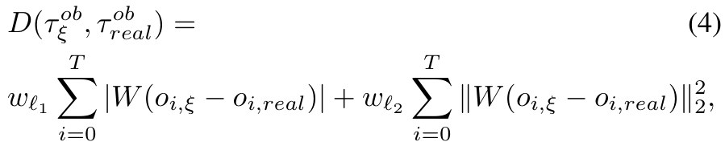
| 符号 | 白话 | 开抽屉例子里（Table IV） |
|---|---|---|
| oi,ξ、oi,real | 第 i 步 sim 和真机的观测 | 关节角 + 把手位置 |
| W | 每个观测维度有多重要 | 关节角 0.5，抽屉位置 1.0 |
| wℓ1、wℓ2 | 绝对差一项、平方差一项各占多少 | 0.5、1.0 |
| T | 轨迹最后一步 | 论文没单列；见下方推断 |
我的推断：453 = 3 × 151，也就是每组参数比完 3 条 rollout（Table IV 的 Timesteps per batch 是 151）；9600 = 64 × 150，也就是所有 GPU 上的 agent 各算一组。论文都没这样写。
flowchart LR a["抽 9600 组参数
从当前高斯"] --> b["闭环跑 policy
453 timesteps"] b --> c["算差距
每组一个数"]
Running example 在这一步
哪组参数让 sim 里也出现"夹爪歪、手指顶把手"，它的差距就小。闭环的价值在 App. A 的 sim 实验：把柜子的 X 位置从差距里拿掉，闭环 policy 的关节轨迹仍随场景变化，而关节轨迹还在差距里，所以分布仍能更新。原文 "still leads to meaningful simulation parameter updates compared to the open-loop execution"，没给数字。
Stage 4 KL-constrained distribution update (REPS) 参数样本和差距 → 下一轮的参数分布
- Why：理想目标（Eq. 2）要为每个候选分布都重训 policy 再上真机，太贵。
- 近似：固定旧分布上训好的 policy，只在旧分布附近找新分布（Eq. 3）。
- 为什么要 KL 约束：policy 只在旧分布上训过，走太远就出了它的 trust region（§III-B）。
- 优化器：REPS，基于采样、不用梯度、自带 KL 上限，模拟器当黑盒（§III-C）。论文没展开内部细节；通常是差距小的样本权重大，再拟合新高斯（这句是我的说明）。
- 完整协方差：学的是 full covariance，所以能发现参数之间的相关（§IV-D，E3）。
- 省真机：同一批 rollout 上跑多步更新；开抽屉 20 步（Table IV）。
- 为什么不用 CMA-ES：项目页 FAQ 说 REPS 相当于加了 KL 约束，更保守；理论上两者都可以。
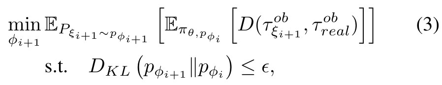
| 符号 | 白话 | 开抽屉例子里 |
|---|---|---|
| φi+1 | 要解的量：下一轮高斯的中心和宽度 | Table I 的 μfinal 是最后的中心 |
| πθ,pφi | 在旧分布上训好的 policy，这一步不动 | iteration 0 的 policy |
| DKL(新 ‖ 旧) | 新旧分布相差多远 | — |
| ε | 允许相差的上限 | KL-threshold 1.0（Table IV） |
读法：找一个新分布，从它抽的模拟器跑旧 policy 时，和真机观测的平均差距最小，但不能离旧分布太远。
flowchart LR a["样本 + 差距
9600 对"] --> b["REPS
KL ≤ 1.0"] b --> c["新中心和宽度
重复 20 步"]
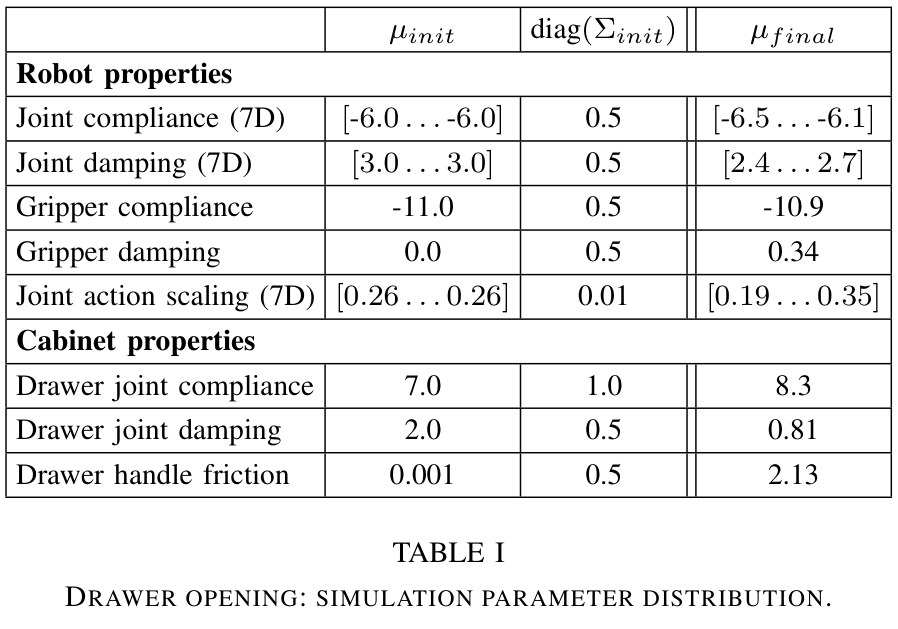
怎么读这张表
- 三列：初始中心、初始宽度（协方差对角线）、最终中心。最终宽度没列出。
- Robot properties：Joint action scaling 从全部 0.26 分散到 0.19…0.35，每个关节的动作幅度不再一样。
- Cabinet properties：把手摩擦 0.001 → 2.13，抽屉 joint damping 2.0 → 0.81。
- 单位：论文没给。compliance 是负数，我猜是对数尺度（推断）。
Running example 在这一步
更新后的中心见 Table I 的 μfinal，用新分布重训的 policy 上真机时夹爪保持垂直。这些值只是"让行为变像"的参数，不等于测到的真实摩擦（项目页 FAQ，见 Limits）。
贯穿全程 闭环本身：两层循环和它的预算 重复 Stage 1–4，直到 policy 在目标上成功
- 内循环：同一批真机 rollout、同一个 policy，反复 Stage 3–4。
- 外循环：用新分布重训，再上真机；重复到 policy 在目标场景开始成功为止（§IV-C）。
- Warm start：sim 实验里用上一轮的权重初始化 policy，第一轮之后 PPO 从 200 降到 10 iterations（§IV-C）。真机抽屉实验仍写每轮 200 iterations（§IV-D2）。
| 每轮预算 | 开抽屉（Franka） | Swing-peg（Yumi） |
|---|---|---|
| RL | 200 iterations ≈ 22 min | 100 iterations ≈ 7 min |
| 真机 rollout | 3 | 3 |
| 分布更新步数 | 20 | 3 |
| 每步采样 | 9600 | 9600 |
| 成功所需 SimOpt 次数 | 1 | 2 |
来源：§IV-D、Fig. 8、Table III、Table IV。表是我按文字整理的。REPS 更新本身耗时论文没报告。
Running example 在这一步
真机开抽屉只转了一圈：训练 → 3 条 rollout → 20 步更新 → 重训 → 评测 20 次。
Recap：例子覆盖了论文的哪些 idea
| 论文里的 idea | 例子里在哪体现 |
|---|---|
| 手调分布太窄或太宽都不行 | Problem、E1：σ 2 cm 能开，10 cm 拉不开 |
| 模拟器参数分布是学习对象 | Stage 1、Stage 4：Table I 的 26 个参数 |
| 保守初始分布 | Stage 1、E2：Fig. 6 最左的高斯 |
| 真机只要部分观测，reward 只在 sim | Stage 1、Stage 2：关节角 + 把手位置 |
| 差距函数 D | Stage 3：Eq. 4 和它的权重 |
| 闭环 rollout 优于开环回放 | Stage 3：柜子 X 位置被藏起来时 |
| KL 约束 + REPS，模拟器当黑盒 | Stage 4：Eq. 3 |
| 同批 rollout 多步更新、warm start | 闭环本身：20 步、200 → 10 |
| 软体和协方差结构 | 开抽屉演示不了，换到第二个任务：E3 |
Results
宽分布学不会的，保守分布加几次更新学得会；真机只用了 3 到 6 条 rollout
顺序同 §IV 的四个问题：E1 把分布调宽行不行 → E2 SimOpt 能否把分布推到目标 → E3 软绳任务上真机 → E4 开抽屉上真机。比的是任务能否完成和要多少真机次数，不比耗时；真机上没有 DR 对照。
E1把随机化调宽，能不能一劳永逸？§IV-C
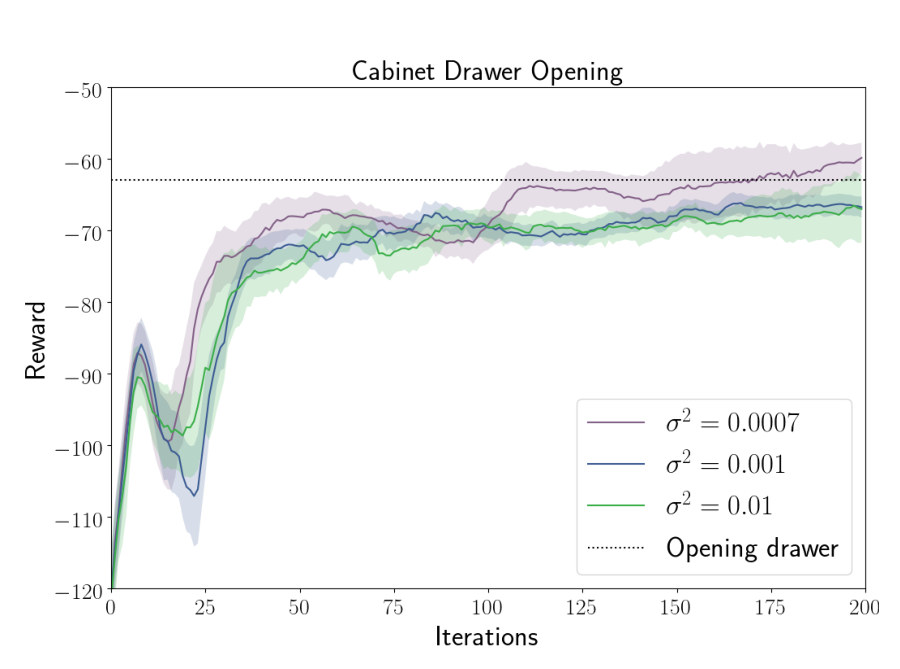
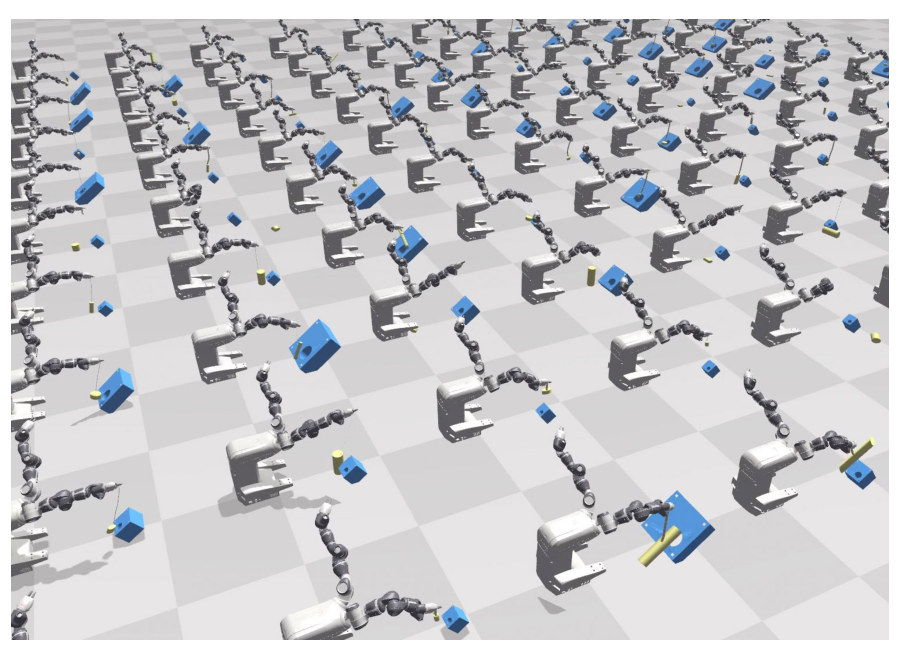
- 说明什么
- 分布越宽，policy 越保守。只有 σ² = 7e-4（论文称 2 cm）能开抽屉；σ² = 0.001 和 0.01（10 cm）够到把手但拉不开。读图：最后约 −60 对 −67，虚线约 −63。三个轴都随机时，只有 2 cm 能收敛，否则连把手都够不到。
- 在故事里
- 回答问题 1、2：调大范围这条路走不通，所以需要 SimOpt。Fig. 4 补上另一半：宽分布还会造出无解的场景。
- 指标
- 训练 reward 曲线。差距看着小，是因为 reward 主要来自 reaching（§IV-C）。虚线的含义和阴影的定义论文没写，seed 数也没写。
- 怎么评测
- sim，Franka 在柜子前，只随机柜子的 X 坐标，其余参数不变
- 2 层 64 单元网络，PPO 200 iterations
- σ² = 7e-4 按公式是 2.6 cm，文中写 2 cm
E2保守分布能被推到偏了 15 / 22 cm 的柜子吗？§IV-C
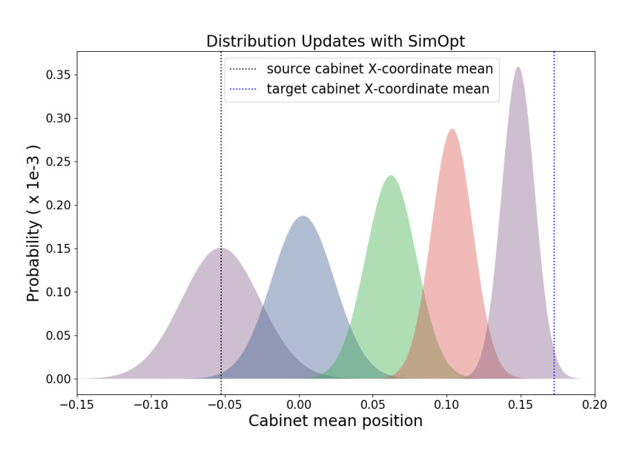
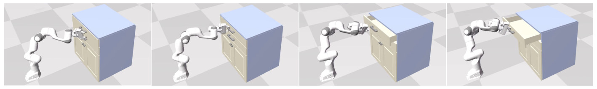
- 说明什么
- 窄分布可以走到宽分布够不着的地方。偏 15 cm 用 3 轮，偏 22 cm 用 5 轮。朴素 DR 要 σ ≥ 10 cm 才覆盖得到，而 E1 说 10 cm 学不会。分布边移动边收窄（Fig. 6）。
- 在故事里
- 回答问题 2、3：真机之前，先在能看到答案的 sim 里证明分布确实往对的方向走。读图：最后的中心约 0.15，没到 0.17，policy 也成功了，说明不需要完全对上（我的推断）。
- 指标
- 目标场景里 policy 能否开始打开抽屉。定性判断，没有成功率。
- 怎么评测
- 同一 sim 里柜子偏移的场景充当"真机"，提供 rollout
- 对照是 E1 的 DR 曲线，不是同一设定下的直接比较
- Fig. 7 caption 说第四轮解决，文字说 22 cm 要 5 轮；论文没说 Fig. 7 是哪个偏移
E3软绳这种难建模的动力学能迁到真机吗？§IV-D1
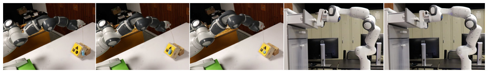
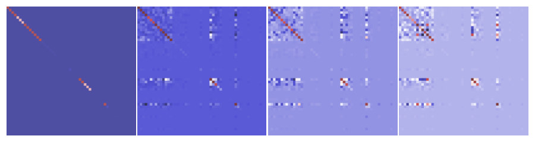
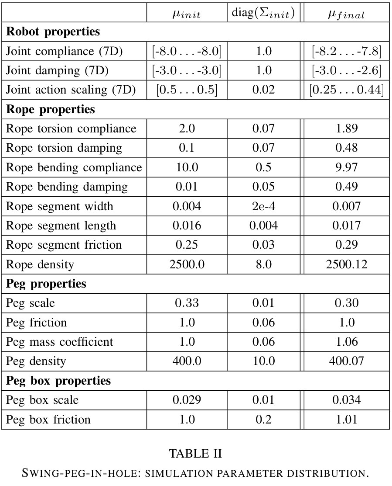
- 说明什么
- 2 次 SimOpt 后，20 次试验 90% 入洞。iteration 0 错过洞；iteration 1 很近但角度不对；iteration 2 入洞。Rope bending damping 0.01 → 0.49，Joint action scaling 0.5 → 0.25…0.44。Fig. 9 左上块显示 joint compliance 和 damping 相关：compliance 调过头可以用 damping 补偿。
- 在故事里
- 回答问题 3、4：换机器人，换成软体。真机只用 6 条 rollout（2 轮 × 3，我算的，不含 20 次评测）。
- 指标
- peg 进洞，20 次试验中的比例。
- 怎么评测
- 7-DoF ABB Yumi，peg 挂软绳，洞成 45 度；观测 7 个关节角 + peg 3D 位置
- 每轮 100 RL iterations ≈ 7 min，3 条真机 rollout，3 步更新 × 9600 样本
- 没有 DR 或 EPOpt 的真机对照，iteration 0、1 的成功率没报告
E4接触丰富的铰接任务能迁到真机吗？§IV-D2
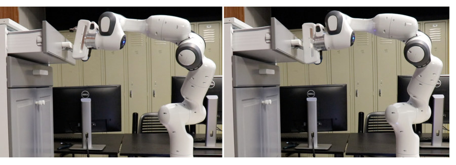
- 说明什么
- 1 次 SimOpt 后，20 次试验全部打开，全程夹爪垂直于把手。更新前能够到把手、开始拉，但一指顶把手，手指被撑开。
- 在故事里
- 回答问题 3、4，也是最直接的证据：3 条真机 rollout 改变了真机行为（3 是我按"1 轮 × 3"算的，不含 20 次评测）。
- 指标
- 原文 "can open the drawer at all times keeping the gripper orthogonal to the handle"，20 次试验。
- 怎么评测
- 7-DoF Franka Panda，10D 观测，7 个关节速度 + 夹爪指令
- 每轮 200 RL iterations ≈ 22 min，3 条真机 rollout，20 步更新 × 9600 样本
- iteration 0 没报成功率，只有定性描述；视频里它也把抽屉拉开了一段
- 20 次试验的初始条件是否变化，论文没说
Limits
局限和开放问题
- 作者（§V）：只学单峰高斯；多峰分布和更复杂的生成模型留到以后。
- 作者（§V）：还没接入 vision 和 touch，无论作为 policy 观测还是随机化因素。
- 作者（项目页 FAQ）：学到的 friction、damping 不保证物理正确，"our algorithm can learn to cheat"，换任务可能失效；建议加外部先验。
- 作者（项目页 FAQ）：初始协方差仍要人设，只是"保守"比"够宽"容易；协方差可能塌缩，要加一个下限。
- 论文没做：真机上没有和 DR、EPOpt 的对照；更新前的真机成功率没有报告。
- 我的推断：每轮都要把半成品 policy 放上真机，还要能复位场景、跟踪物体（DART 要 3D 模型），论文没讨论这部分的安全和成本。
For r2s-lite
对我们有什么用
- mass / friction 是假设值：SimOpt 正是调这类参数的办法（Table I），但它要当前 policy 的新 rollout。r2s-lite 只有一条录像、开环回放，而 App. A 的 sim 实验里开环不如闭环，所以我们能做的更接近 [30] 式的拟合（推断）；拟合出的值只能标 fitted，不能标 measured。
- 没有 sim-to-real 证据：这篇给了最小协议：sim 里训 → 真机 3 条 → 更新 → 20 次评测报成功率。DROID 录像给不了新 rollout，要在自己能操作的真机上做，比如 SO-101 抽屉（推断）。
- DROID 相机偏约 20 cm：SimOpt 假设观测可信（DART 跟踪）。把错相机下的轨迹喂给差距函数，优化会用摩擦之类的参数去解释相机误差，和 FAQ 说的 cheat 同一机理（推断）。先修相机，再调物理。